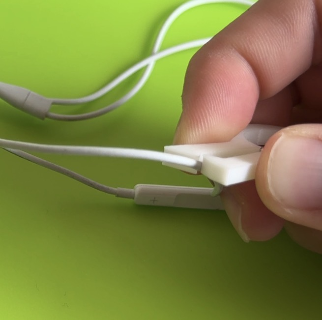

私が作ったものは、「イニシャルピンセット」です。
リュウセイの「R」を工夫してつかめるように設計しました
なぜこの作品を作ったかというと、ひとつのアイデアで26の形が生まれ、
自分の名前に関連すると愛着が湧くと思ったからです

実際につかんでみると、思ったよりもつかみにくく、
つかむときに、ペンチのように対象のものが切れる可能性がありました。
イニシャルピンセット
今回作ってみて、３Dプリントの可能性について考えることが増えました。
それと同時に難易度の高いものを作ると、失敗する可能性が高くなることも学びました。